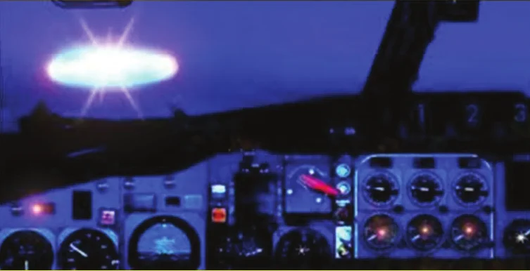
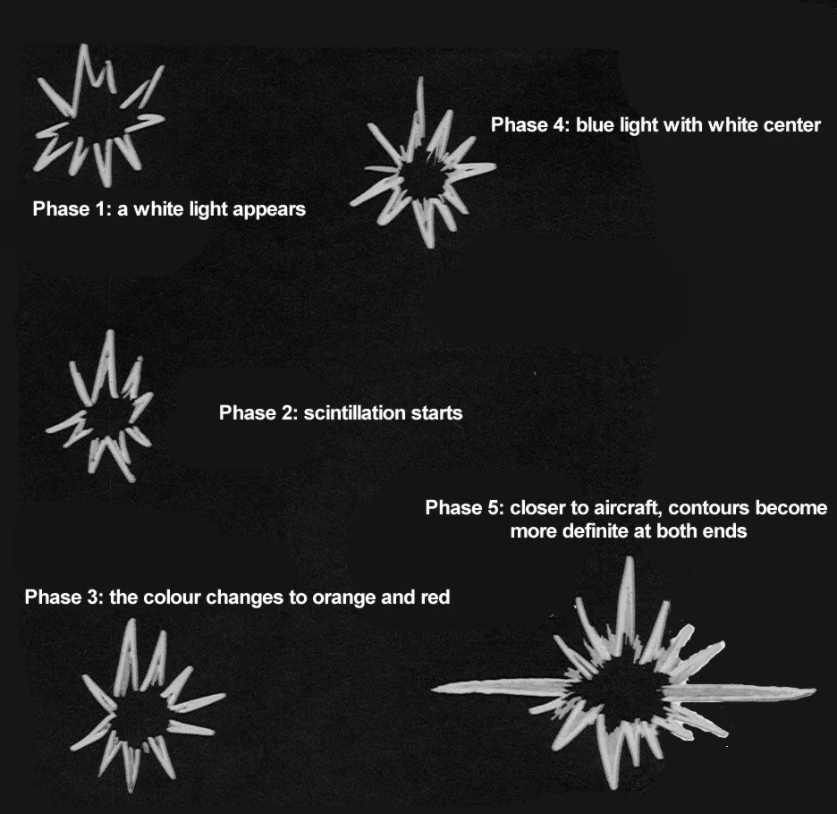
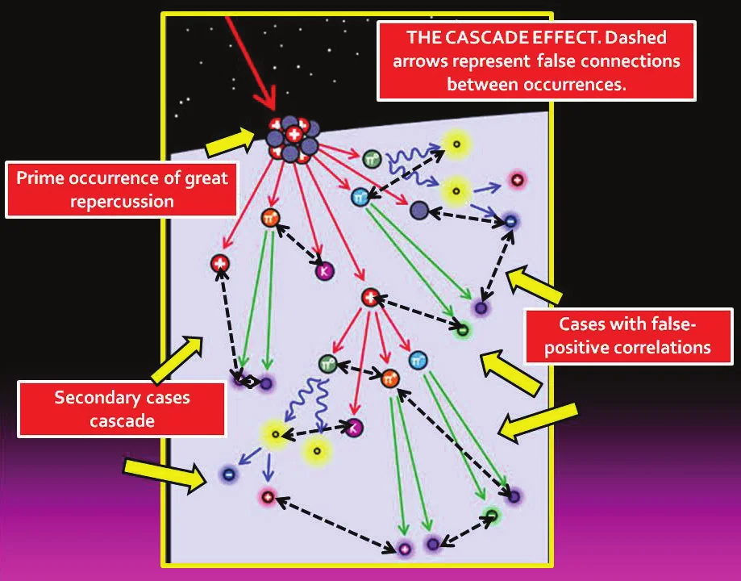

We briefly discuss some basic aspects concerning the behavior and reliability of unidentified aerial phenomena eyewitnesses strongly affecting the quality and evidential weight of their reports. Among them are expressiveness, degree of technical knowledge, honesty, and pre-existing conceptions we refer to as “ufophilia” and a more severe form of it that we could name “ufopathy.” External influences like the cascade and media lensing effects are also considered.
Scientific investigations about unidentified aerial phenomena (thereafter UAPs) observations, close encounters with supposed extraterrestrial beings, as well as alleged abduction episodes conducted by aliens are always like criminal detective work. The investigator rarely participates in the occurrence, usually arriving after the fact.
In this paper we briefly discuss some basic aspects concerning the behavior and reliability of unidentified aerial phenomena eyewitnesses that strongly affect the quality and evidential weight of their reports, based on experiences of field investigations.
When carrying out an investigation of an occurrence of a possible ufological nature, eyewitness reports always represent an important piece of evidence in the puzzle of elucidating what would have happened, in addition of elements such as images, video records, physical evidence, and positive radar contacts.
However, the big question is that what an eyewitness reports is always a mixture of what he or she saw with what he or she thinks he or she saw, and separating those two things is never an easy task. Strictly speaking, it may even be impossible.
This represents a considerable obstacle to the investigation, especially when there are no additional eyewitness reports, or independent corroborating evidence such as that cited above.
What a witness thinks he or she has seen will depend on many factors, being strongly influenced by the way people tend to construct their culture and knowledge.
No witness, even one who is entirely honest, is totally trustworthy. Witnesses often build false memories, misinterpret what they see, and establish non-existent relationships between details of what they experienced, in addition to, quite often, not having the ability to describe exactly what they observed, and what supposedly would have happened. Therefore, an occurrence based exclusively on the testimony of a single witness will always have very low evidential weight, regardless of the witness's credentials. An occurrence where more than one witness is available will be of greater value. Even so, in the absence of other more objective evidence (such as images, video records, radar echoes, and physical traces) an occurrence with only multiple witnesses will still not be of a great value.
It is possible to distinguish different types of witnesses, namely:
Honesty aside, we can list the following factors that may affect or influence the testimony of witnesses of UAP events: low level of technical qualification, difficulty of expression and inability to describe exactly what was observed or witnessed, “Ufophilia”, “Ufopathy”, the Cascade effect, and the Media Lensing effect. Surely, this list is not complete.
This factor strongly influences the evidential weight of a witness report. Without consistent minimal knowledge in the fields of physics, astronomy, meteorology and engineering, it is very difficult to extract accurate and technically reliable information from the account of a witness.
The vast majority of cases of unidentified aerial phenomena sightings involve witnesses with few technical qualifications. This greatly hinders the investigation, but the patient work of an investigator with considerable expertise in the areas of knowledge mentioned above can contribute, in part, to the retrieval of more or less reliable information, whether applying their own technical knowledge to judge and evaluate the details reported by the witness, or by conducting additional interviews where the investigator, seeking to question the witness, will be able to extract a more precise idea of what would have happened.
In cases where the witness is technically qualified, the investigation is facilitated, but it should be noted that even so, the investigator should seek to build his or her own interpretation of the report and also, if available, use other impersonal evidence to bring your study to a good conclusion.
It is also observed that most witnesses who report experiences of sightings or close encounters with UAPs do not have the full capacity to express themselves properly, using inappropriate words to narrate what they observed.
Some typical examples of this are described by da Silva, Kemper and Hoffmann Netto () Da Silva, L.A.L., Kemper, E. & Hoffmann Netto, M.: Luzes Estranhas e Círculos na Areia Observados em Junho, 2020, no Litoral Sul do Brasil,
Omega Centauri Network for the Advancement of Scientific Education, AIFI Nucleus, Technical Report 01-2021, Ref.
ωκ-TA-2021.01, Porto Alegre, Brazil, , where a witness describes his
visual observation of the optical ablation of a bolide fragmenting through the
atmosphere as four spheres of light moving at low altitude.
The word “sphere” is certainly not a convenient
one to describe a bright meteor. And, on the other hand, what exactly does “low altitude” mean: low flight level,
or small angular elevation above the horizon line?
Another witness, simply looking at planet Jupiter
near the horizon over the sea, again uses the expression sphere of light
, and estimates that the “object”
was about 200 meters high
and about one or two kilometers away.
It is also common to associate brightness variations caused by the presence of variable cloudiness, with real movements of unidentified objects towards and away from the observer. Time intervals are also often underestimated, or overestimated.
This occurs even in cases involving technically qualified witnesses, as in the case of experienced commercial
pilot Gérson Maciel de Britto, the main protagonist
of one of the most famous Brazilian UAP cases, the incident of
the VASP-169 flight (see, e.g., da Silva, ) Da Silva,
L.A.L.: Unidentified
Aerial Phenomena: The VASP-169 Flight Brazilian Episode Revisited, Journal of Scientific
Exploration, vol. 27, n° 4, pp. 637-654, . When the planet Venus, deformed by the effect of a rare atmospheric
mirage, was mistaken for a UFO, the phenomenon was reported as
a flying saucer outline embedded in a flurry of light activity, not a star. It looked like a fixed thing, a
fixed outline with a luminous focus
. This inadequate description gave rise to completely unrealistic
simulated images released by the media at the time, contributing to the consolidation of a highly distorted view
of what had actually been observed. See Figures 1 and 2.


Witnesses with a high degree of academic knowledge, for example, professors, researchers and scientists, even in the field of exact sciences, often also make mistakes. A notable example of this is the famous classic case of the “Lubbock lights”, Texas, in , in which, perhaps because they were deeply influenced by the frequent news about UAP in wide circulation in the media at the time, the witnesses (all professors) confused flocks of migratory birds flying at night with flying saucers.
Although not always, reports from the military can be even more disappointing, as can be seen, for example, in one of the official reports released by the Brazilian Air Force (FAB) Brazilian Air Force: Report about “Operação Prato” (Operation Saucer), available at https://operacaoprato.com/documentos-oficiais and https://www.fenomenum.com.br/chupa-chupa8/ on the famous campaign to track unknown luminous phenomena, which took place in in northern Brazil known as the “Operação Prato” (Operation Saucer).
Examining that report, one finds absurd phrases and assessments, such as passage of a luminous body, probably
an artificial satellite, estimated altitude 35,000 feet.
[Editor's note] This sentence is not found as such in the Operation Prato report hosted by RR0: there, the entry of about a luminous body at high altitude (approx. 35,000 ft), reddish and fast, is marked “(?)”, not “(S)”, and the only entry mentioning a satellite (Passagem de um corpo luminoso, altitude superior (satélite)
) gives no altitude. The quote may come from another report of the collection cited above. Artificial satellites at 35,000 feet?! In addition, several
members of the team, especially the commander, captain Uyrangê Hollanda, showed obvious signs of
sympathy for flying saucers (see below).
We use this word to designate a person's predisposition to believe (and like to believe) in flying saucers, interpreted as real spaceships manned by intelligent beings who regularly visit our planet.
When evaluating the credibility of a witness's report of unidentified aerial phenomena sightings, an investigator should be aware of the possibility that that person shows signs of being a flying saucer sympathizer.
Ufophilia does not depend on the witness's culture, knowledge, education level or technical qualifications. A
sufficient demonstration of this is found, again, in the Brazilian case of the VASP-169 flight, when Commander
Gérson Maciel de Britto reported to the press his attempt to establish telepathic
contact with the object's crew
who was accompanying him, without, however, being successful. Such a
declaration constitutes an evident proof of ufophilia.
In another famous case also involving a commercial pilot, namely, the case of JAL-1628 cargo flight over Alaska on , Commander Kenju Terauchi also demonstrates, in his attitudes and statements, evidence of ufophilia.
We define ufopathy as a behavior of proven ufophilia taken to extremes, assuming the character of an almost pathological syndrome. Individuals who believe they are “chosen” for having been “contacted” or “abducted,” as well as those who believe that extraterrestrials are powerful creatures who wish to intervene and help humanity, thus configuring a kind of modern mystic or religious sect imbued with scientific and technological characteristics, are ufopaths.
The possibility of ufopathy must also always be taken into account when evaluating a witness. Ufopathy as well as ufophilia wipe out the impartiality of a witness, practically nullifying the value of their testimony.
By Cascade effect we mean the influence that a case of an unidentified aerial phenomena sighting with great media attention exerts, inducing reports of other similar occurrences, sometimes triggering a wave of sightings, because the people involved in those events, alerted by the news, on the one hand start to remember strange facts they had recently experienced and, on the other, they start to pay more attention to phenomena that, under normal circumstances, in the absence of news about strange things, would go unnoticed.

In situations like these, it is quite common for false-positive links to be established between two or more occurrences. A typical example here is the association of the “UFO” in the case of flight VASP-169 flight referred to above with the visual and photographic record of a ring-shaped mesospheric cloud, seen during the night in the city of Torres, southern Brazil, two days before the flight incident (da Silva, ) Da Silva, L.A.L.: Unidentified Aerial Phenomena: The VASP-169 Flight Brazilian Episode Revisited, Journal of Scientific Exploration, vol. 27, n° 4, pp. 637-654, .
The cascade effect, encouraged mainly by the media and, today also by social networks, can strongly influence the opinion of witnesses, contributing to the introduction of distortions in their testimonies.
This effect acts mainly (but not only) in waves and mini-waves of unidentified aerial phenomena sightings. Media coverage of those events is often biased, imprecise and poorly conducted, distorting or ignoring relevant facts and details, favoring or even inducing false conclusions, shaping the thinking and opinion of the witnesses involved. A previous event, reported in an exaggerated way, can influence the behavior and testimony of witnesses involved in other later cases.
We have pointed out some important fundamental aspects that influence the behavior of witnesses to sightings of unidentified aerial phenomena, affecting the degree of reliability of their statements. Personal trends and the direct influence of the media are elements that cannot be ignored when giving weight to reports from witnesses involved in cases of UAP sightings. There is no case where only the testimony of one or even more than one witness is able to reliably establish what actually happened.